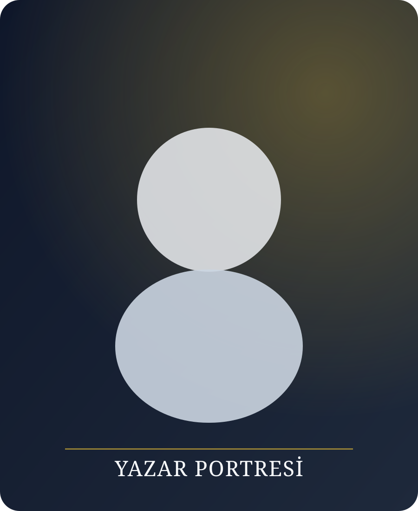
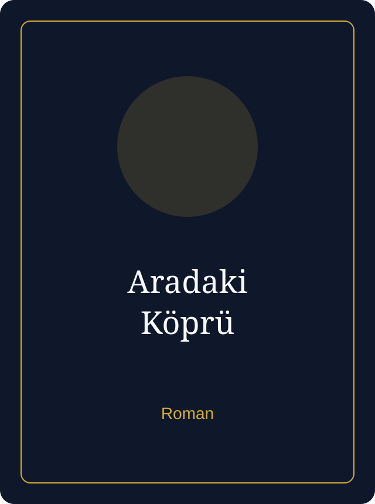
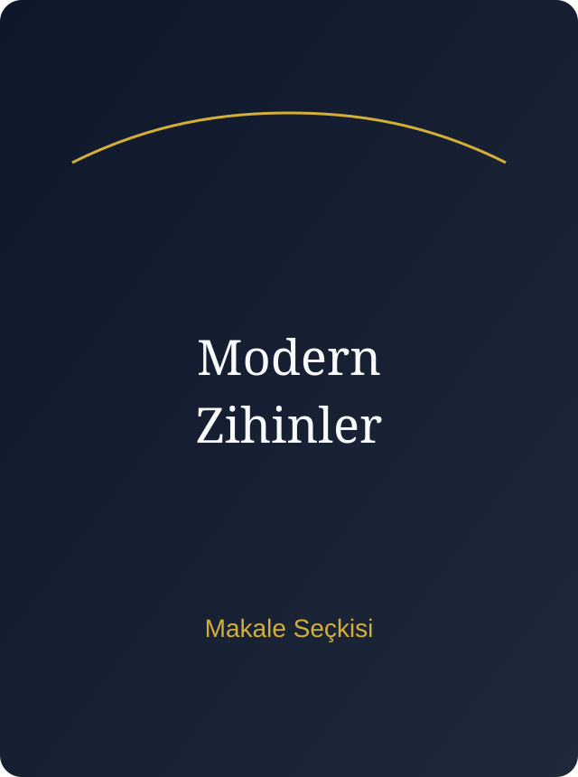

Felsefi Derinlik
Her kitap, okuru hazır cevaplardan uzaklaştırıp üretken bir sorguya davet eder.
Yazar · Düşünür · Konuşmacı
N. Demir, çağdaş insanın anlam arayışını edebiyatla birleştiren eserleriyle tanınır. Metinlerinde estetik, etik ve hafıza arasında güçlü bir bağ kurar.
Aşağı Kaydır
Yazarın yaklaşımı; dilin yalnızca bir anlatı aracı değil, düşüncenin kendisi olduğu fikrine dayanır.
Deneme, roman ve makale türlerinde ürettiği metinler; toplumsal dönüşümü bireyin iç sesiyle buluşturur.
Her kitap, okuru hazır cevaplardan uzaklaştırıp üretken bir sorguya davet eder.
Minimal anlatım ile yoğun anlamı bir araya getiren rafine bir üslup.
Seçili Kitaplar

Modern yaşamın gürültüsünde, iç sesin imkânlarını araştıran denemeler.

Bellek, aidiyet ve kent arasında geçen çok katmanlı bir anlatı.

Yeni çağın zihinsel krizlerine dair seçilmiş makale ve konuşmalar.